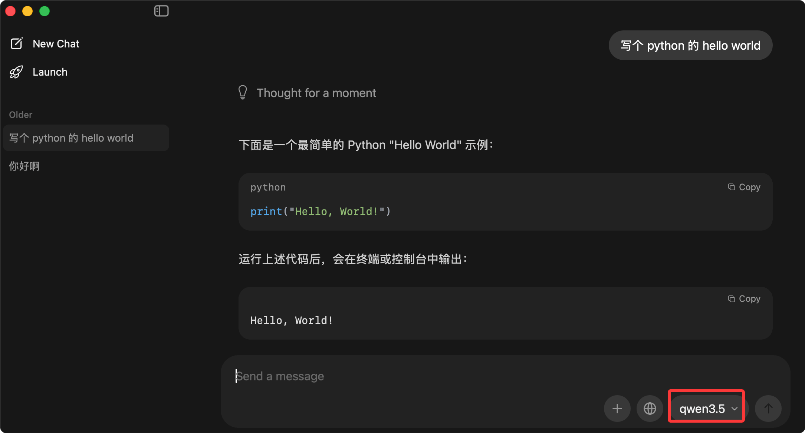

ローカルモデル展開
多くの人はAIはクラウドでしか使えないと思っている。ChatGPTを使うときはデータがOpenAIのサーバーに送信され、Claudeを使うときはリクエストがAnthropicのデータセンターに送信される。
実は、AIモデルは完全に自分のコンピュータ上で実行できる。
想像してみてほしい：ネットワークがなくてもAIを使え、機密データが自分のコンピュータから出ることもなく、呼び出しのたびに料金を支払う必要もなく、自由にカスタマイズできる。
これがローカルモデル展開の価値です。
このモジュールでは、ゼロから始めて、自分のコンピュータで最初のローカルAIモデルを実行できるようにします。
なぜローカルAIが必要なのか
クラウドAIは便利ですが、ローカルAIには代替できない利点があります。
データプライバシー保護
これは多くの人がローカル展開を選ぶ第一の理由です。
扱うデータが契約書、カルテ、財務データ、内部文書の場合、これらのデータを第三者のサーバーに送信することはリスクがあります。
ローカルで実行する場合、すべてのデータが自分のコンピュータ上で処理され、デバイスの外に出ることはありません。
オフライン環境での利用
飛行機の中、電車の中、ネットワークが不安定な場所では、クラウドAIは使えません。
ローカルモデルは一度ダウンロードすれば、インターネット接続なしで永久に利用できます。
コスト管理
クラウドAIは呼び出し回数やトークン単位で課金されるため、多く使うと少なくない出費になります。
ローカルモデルは一度ダウンロードすれば、その後は自由に使え、追加料金は不要です。
カスタマイズ可能性
クラウドモデルは変更できず、提供されている機能を使うしかありません。
ローカルモデルはファインチューニング、量子化、プロンプトテンプレートの変更ができ、完全に自分のニーズに合わせてカスタマイズできます。
これらの利点の比較：
| 特性 | クラウドAI | ローカルAI |
|---|---|---|
| データプライバシー | データのアップロードが必要 | データは完全にローカル |
| ネットワーク依存 | オンライン必須 | ネットワーク不要 |
| 利用コスト | 従量課金（回数制） | 一度ダウンロードして無制限に利用 |
| カスタマイズ能力 | 制限あり | 完全に制御可能 |
| 利用のしやすさ | すぐに使える | 設定が必要 |
| 応答速度 | ネットワーク次第 | ハードウェア次第 |
クラウドAIが悪いというわけではなく、両者にはそれぞれ適したシナリオがある。日常的な雑談にはクラウド、機密データの処理にはローカル、簡単なタスクにはクラウド、特別なカスタマイズにはローカル。
ハードウェア要件の評価
ローカルモデルが実行できるか、どのくらい速いかは、主にハードウェア構成によります。
CPU推論 vs GPU推論
モデルの実行にはCPU推論とGPU推論の2つの方法があります。
CPU推論はコンピュータのメインプロセッサでモデルを実行する方法で、互換性が高く、ほとんどのコンピュータで実行できるという利点があります。欠点は速度が遅く、大規模モデルでは長時間待つ可能性があることです。
GPU推論はグラフィックカードで実行し、中核的な利点は並列計算能力が高く、モデルの実行速度が数十倍速いことです。
NVIDIA GPUにはCUDAツールキットのインストールが必要です。AMD GPUではROCmを、Intel GPUではOpenVINOを使用できます。
ビデオメモリ要件とモデルサイズの関係
ビデオメモリ（VRAM）によって、実行できるモデルの大きさが決まります。
モデルのパラメータが多いほど、必要なビデオメモリは大きくなります。しかし量子化技術を使えば、より少ないビデオメモリでより大きなモデルを実行できます。
| ビデオメモリサイズ | 実行可能なモデル（FP16） | 実行可能なモデル（量子化後） | 推奨シナリオ |
|---|---|---|---|
| 8 GB | 7Bモデルはやや厳しい | 7B（Q4）、13B（Q4）ならかろうじて | 簡単な対話、軽量タスク |
| 16 GB | 7B、13Bモデル | 7B、13B（Q4/Q8）、33B（Q4） | 日常使用、コストパフォーマンス最高 |
| 24 GB | 7B、13B、33Bモデル | 7B、13B、33B（Q4/Q8）、70B（Q4） | 専門用途、快適な体験 |
| 48 GB+ | 33B、70Bモデル | すべての主流モデル | 研究、本番環境 |
Mac Mシリーズの利点
Apple Silicon（M1、M2、M3シリーズチップ）はローカルAIにおいて独自の利点があります。
AppleのMetalフレームワークとユニファイドメモリアーキテクチャにより、Macはローカルモデルを効率的に実行できます。
ユニファイドメモリとは、CPUとGPUがメモリを共有することです、ビデオメモリが不足した場合に自動的にメモリを借用できます。
16GBユニファイドメモリのMacBook Proは、7B、13Bの量子化モデルをスムーズに実行できます。
推奨構成
予算やニーズに応じて、いくつかの構成案を紹介します：
| 構成 | スペック | 対象者 | 期待できる体験 |
|---|---|---|---|
| 入門構成 | 任意のコンピュータ（8GB以上のメモリ） | ローカルAIを体験したい初心者 | 小規模モデルは実行可能、速度は遅め |
| コスパ構成 | 16GBメモリ + 6GB以上VRAM | 個人の日常使用 | 7B/13Bモデルが快適に動作 |
| プロ向け構成 | 32GBメモリ + 12GB以上VRAM | 開発者、研究者 | 33Bモデルが快適に動作 |
| Mac構成 | M1/M2/M3 + 16GBユニファイドメモリ | Macユーザーにおすすめ | 7B/13Bモデルが快適に動作 |
「大規模モデル」という言葉に怖がらないでください。今日の量子化技術により、7Bモデルは一般的なコンピュータでもスムーズに動作します。そして7Bモデルの能力は、ほとんどの日常的なタスクで十分です。
Ollama：最も簡単なローカルAIツール
- Ollama公式サイト：https://ollama.com/
- Ollama対応モデル一覧：https://ollama.com/search
- Ollamaチュートリアル：https://www.runoob.com/ollama/ollama-tutorial.html
Ollamaは現在最も人気のあるローカルモデルツールです。一言で言えば：アプリをインストールするようにモデルをインストールし、コマンドラインを使うようにAIを利用する。
インストールと設定
OllamaはmacOS、Linux、Windowsに対応しており、インストールは非常に簡単です。
インストーラのダウンロードURL：https://ollama.com/download
1コマンドでインストール：
curl -fsSL https://ollama.com/install.sh | sh
macOSユーザーはインストーラを直接ダウンロードするか、Homebrewでインストールできます：
# macOS 使用 Homebrew 安装 brew install ollama # 或者下载安装包：https://ollama.com/download
Windowsユーザーは公式サイトからインストールパッケージをダウンロードして実行するだけでOKです。
インストール完了後、Ollamaサービスを起動します：
ollama serve
サービスの起動が成功したら、すぐに使い始められます。
モデルのダウンロード
Ollamaのモデルライブラリは非常に豊富で、Llama、Qwen、Gemma、Mistralなどの主流モデルが含まれています。
モデルのダウンロードは1つのコマンドだけで済みます：
例
ollama pull llama3
# Qwen（通義千問、中国語に親和性が高い）をダウンロード
ollama pull qwen
# Gemma（Google製）をダウンロード
ollama pull gemma
# Mistralをダウンロード
ollama pull mistral
次のようにも使えますollama run + モデル名コマンドを使うと、指定したモデルがない場合は自動的にダウンロードされます：
ollama run qwen
qwenモデルを実行します。なければダウンロードされます。
各モデルには、8B、70Bなどの異なるバージョン、または異なる量子化バージョンがあります。
次のコマンドでollama listダウンロード済みのモデルを確認できます：
ollama list
出力は次のようになります：
NAME ID SIZE MODIFIED qwen3.5:latest 6488c96fa5fa 6.6 GB 3 months ago
コマンドラインでの使用
モデルをダウンロードしたら、直接実行するだけで会話を開始できます：
# 运行 Llama 3，没有会下载 ollama run llama3 # 运行 Qwen，没有会下载 ollama run qwen3.5
qwen3.5は通常のタスクには十分すぎるほどです：

その後、そのままモデルと対話できます：
>>> 你好，请介绍一下你自己
你好！我是 Llama 3，由 Meta 开发的 AI 助手。我可以帮你回答问题、
写作、编程、分析数据等。有什么我可以帮你的吗？
>>> 用 Python 写一个 Hello World 程序
好的，这是一个简单的 Python Hello World 程序：
print("Hello, World!")
>>> /bye # 输入 /bye 退出
よく使うコマンド：
| コマンド | 機能 | 例 |
|---|---|---|
| ollama pull <model> | モデルのダウンロード | ollama pull llama3 |
| ollama run <model> | モデルの実行 | ollama run llama3 |
| ollama list | インストール済みモデルの一覧表示 | ollama list |
| ollama rm <model> | モデルの削除 | ollama rm llama3 |
| ollama show <model> | モデル情報の表示 | ollama show llama3 |
API呼び出し
OllamaにはHTTP APIが組み込まれており、コマンドラインだけでなくコードから呼び出すこともできます。
デフォルトでは、Ollamaはhttp://localhost:11434でAPIサービスを提供します。
PythonからOllama APIを呼び出す：
例
# PythonからOllama APIを呼び出す
import requests
import json
# Ollama APIのアドレス
OLLAMA_URL = "http://localhost:11434/api/generate"
def ask_ollama(prompt: str, model: str = "llama3") -> str:
"""
Ollamaにリクエストを送信し、モデルの応答を取得する
Args:
prompt: ユーザーが入力したプロンプト
model: 使用するモデル名、デフォルトはllama3
Returns:
モデルの応答テキスト
"""
# リクエストデータを構築
payload = {
"model": model, # 使用するモデル
"prompt": prompt, # ユーザー入力
"stream": False # ストリーミング出力を使用せず、一括で返す
}
try:
# POSTリクエストを送信
response = requests.post(OLLAMA_URL, json=payload)
response.raise_for_status() # リクエストが成功したか確認
# 返されたJSONを解析
result = response.json()
return result.get("response", "")
except requests.exceptions.ConnectionError:
return "エラー：Ollamaサービスに接続できません。Ollamaが起動していることを確認してください"
except requests.exceptions.RequestException as e:
return f"リクエストエラー：{str(e)}"
# テストしてみる
if __name__ == "__main__":
# テスト問題1
question1 = "RUNOOBチュートリアルを一言で紹介してください"
answer1 = ask_ollama(question1)
print(f"問：{question1}")
print(f"答：{answer1}")
print("-" * 50)
# テスト問題2
question2 = "フィボナッチ数列を計算するPython関数を書いてください"
answer2 = ask_ollama(question2)
print(f"問：{question2}")
print(f"答：{answer2}")
このスクリプトを実行します：
例
pip install requests
# スクリプトを実行
python ollama_test.py
より高度なラッパーを使いたい場合は、Ollama公式のPythonライブラリを使用できます：
例
# Ollama Pythonライブラリを使用
# 先にインストール：pip install ollama
import ollama
def chat_with_runoob():
"""
Ollama Pythonライブラリを使用してマルチターン会話を行う
"""
# メッセージ履歴
messages = [
{
"role": "system",
"content": "あなたはRunoobBotという名前のフレンドリーなプログラミングアシスタントです。回答は簡潔で実用的にし、コード例を多用してください。"
}
]
print("RunoobBotが起動しました！終了するには'quit'と入力してください。")
print("-" * 50)
while True:
# ユーザー入力を取得
user_input = input("あなた：")
if user_input.lower() in ["quit", "exit", "終了"]:
print("さようなら！")
break
# ユーザーメッセージを履歴に追加
messages.append({
"role": "user",
"content": user_input
})
# モデルを呼び出す
response = ollama.chat(
model="llama3",
messages=messages
)
# 応答を取得
assistant_message = response["message"]["content"]
print(f"RunoobBot：{assistant_message}")
print("-" * 50)
# アシスタントの応答を履歴に追加
messages.append({
"role": "assistant",
"content": assistant_message
})
if __name__ == "__main__":
chat_with_runoob()
Open WebUI との統合
コマンドラインも便利ですが、グラフィカルインターフェースのほうが親しみやすいです。
Open WebUIは非常に美しいWebインターフェースで、Ollamaに接続して、ChatGPTのようにローカルモデルを使うことができます。
Open WebUIのインストール：
例
docker run -d -p 3000:8080 --add-host=host.docker.internal:host-gateway -v open-webui:/app/backend/data --name open-webui --restart always ghcr.io/open-webui/open-webui:main
# Dockerを使わない場合は、pipでもインストールできます
pip install open-webui
open-webui serve
インストール完了後、ブラウザでhttp://localhost:3000を開くと、ChatGPTによく似たインターフェースが表示されます。
Ollama + Open WebUIは、現在最もおすすめのローカルAIの組み合わせです。インストールが簡単で、インターフェースも使いやすく、機能も強力で、大多数のユーザーに適しています。
LM Studio：GUI操作
コマンドラインが苦手な場合、LM Studioは良い選択肢です。完全なグラフィカルインターフェースで、モデルのダウンロードや実行はすべてウィンドウ内で完了します。
LM Studio のインストール
LM StudioはWindows、macOS、Linuxに対応しています。
公式サイトからhttps://lmstudio.aiインストールパッケージをダウンロードして、そのままインストールするだけです。
モデルのダウンロードと管理
LM Studioを開くと、左側にモデルライブラリがあります。
モデル名で検索できます。例えば「llama」「qwen」「mistral」などで検索し、目的のモデルを見つけてクリックしてダウンロードします。
LM Studioは同じモデルの異なるバージョンを自動的に一覧表示します：
| バージョン | 説明 | 推奨シーン |
|---|---|---|
| Q4_K_M | 4ビット量子化、品質の劣化が小さい | 大多数の人におすすめ |
| Q5_K_M | 5ビット量子化、品質はより良く、サイズはやや大きい | VRAMに余裕がある場合はこちら |
| Q8_0 | 8ビット量子化、ネイティブ品質に近い | 品質を重視し、VRAMが十分にある場合 |
| FP16 | 全精度、サイズは最大 | 研究用途 |
ダウンロードしたモデルは「My Models」リストに表示されます。
ローカルAPIサービス
LM StudioもAPIサービスを提供でき、OpenAIのAPI形式と互換性があります。
つまり、OpenAI向けに書いたコードは、APIアドレスとKeyを変更するだけで、ローカルモデルを使うことができます。
例
# LM StudioはOpenAI API形式と互換性があります
from openai import OpenAI
# LM Studioローカルサーバーに接続
# 注意：先にLM Studioでサーバーを起動する必要があります
client = OpenAI(
base_url="http://localhost:1234/v1",
api_key="lm-studio" # LM Studioではこのプレースホルダーで問題ありません
)
def ask_local_model(prompt: str, system_prompt: str = "あなたは役立つアシスタントです。") -> str:
"""
OpenAI互換インターフェースを介してLM Studioローカルモデルを呼び出す
"""
response = client.chat.completions.create(
model="local-model", # このフィールドはLM Studioでは無視されます
messages=[
{"role": "system", "content": system_prompt},
{"role": "user", "content": prompt}
],
temperature=0.7,
)
return response.choices[0].message.content
# テスト
if __name__ == "__main__":
question = "RUNOOBチュートリアルの特徴を紹介してください"
answer = ask_local_model(
prompt=question,
system_prompt="あなたはRunoobの専属カスタマーサポートで、プログラミング学習に関する質問に専門的に答えます。"
)
print(f"問：{question}")
print(f"答：{answer}")
この機能は非常に便利です。同じコードを使って、必要に応じてクラウドモデルとローカルモデルを切り替えることができます。
ローカルAIを使い始めたばかりのユーザーには、まずLM Studioで基本概念と操作を学び、慣れてからOllamaで自動化や統合を行うことをおすすめします。
モデル量子化入門
量子化は、大規模モデルを通常のコンピューターで動かすための重要な技術です。より少ないVRAMでより大きなモデルを実行し、能力の大部分を維持します。
量子化とは
簡単に言うと、量子化とはモデルパラメータの精度を下げることです。
ネイティブモデルは通常、各パラメータを16ビット浮動小数点数（FP16）または32ビット浮動小数点数（FP32）で格納します。
量子化後、8ビット整数（INT8）や4ビット整数（INT4）で格納します。
精度は下がりますが、サイズとVRAM使用量も大幅に削減されます。
例を挙げます：
| 精度 | 7Bモデルサイズ | 13Bモデルサイズ | VRAM要件 | 品質損失 |
|---|---|---|---|---|
| FP16 | 13 GB | 26 GB | 高 | 无 |
| Q8_0 | 7 GB | 13 GB | 中 | 非常に小さい |
| Q5_K_M | 5 GB | 9 GB | 低 | 許容可能 |
| Q4_K_M | 4 GB | 7 GB | 非常に低い | 軽微 |
| Q3_K_M | 3 GB | 5 GB | 極めて低い | 顕著 |
経験上、Q8量子化は品質低下をほとんど感じず、Q4量子化はほとんどのタスクで十分です。
GGUF 形式の詳細
GGUFは現在最も人気のある量子化モデル形式です。
GGUFの前身はGGMLで、llama.cppプロジェクトによって開発されました。
この形式の利点：
-
第一に、クロスプラットフォーム互換性が高い——Windows、macOS、Linuxで使用でき、CPU、GPUの両方で動作します。
-
第二に、多様な量子化レベルをサポート——FP16からQ3まであり、用途に応じて選択できます。
-
第三に、推論速度が速い——CPUとGPU向けに多くの最適化が行われています。
現在、ほとんどのローカルモデルツール（Ollama、LM Studio、llama.cpp）がGGUF形式をサポートしています。
Q4/Q8 量子化の違い
Q4とQ8は最も一般的に使用される2つの量子化レベルです。
Q8量子化は8ビットで、各パラメータを8ビット整数で格納します。Q8の利点は品質損失が極めて小さく、元のモデルとほぼ同じ、欠点はサイズがまだ十分に小さいとは言えないことです。
-
Q4量子化は4ビットで、各パラメータを4ビット整数で格納します。Q4の利点はサイズが小さく、速度が速い、欠点は複雑なタスクでの品質低下が比較的顕著なことです。
選択方法：
| シナリオ | 推奨量子化レベル | 理由 |
|---|---|---|
| VRAMが非常に限られている（8GB以下） | Q4_K_M | 使えることが最優先 |
| 日常会話、簡単なタスク | Q4_K_M | コストパフォーマンスが最も高い |
| 文章作成、プログラミング、分析 | Q5_K_M または Q6_K | 品質と速度のバランス |
| 最高品質を追求 | Q8_0 | ネイティブ品質に近い |
AWQ/GPTQ 量子化方式
GGUFの量子化方式の他に、一般的に使われる2つの量子化手法があります：AWQ と GPTQ です。
AWQ（Activation-aware Weight Quantization）の特徴は結果への影響が大きい重みを保持する、量子化後の品質損失がより小さいことです。
GPTQ（Gradient-based Post-Training Quantization）の特徴は勾配情報を使って量子化を最適化する、GPUがある環境に適していることです。
これらの2つの手法は主にCUDA対応のNVIDIA GPUで使用されます。
簡単な比較：
| 量子化手法 | 対応ハードウェア | 速度 | 品質 | 推奨ツール |
|---|---|---|---|---|
| GGUF | CPU + 各種GPU | 快 | 好 | Ollama、LM Studio |
| AWQ | NVIDIA GPU | 非常に速い | 非常に良い | vLLM、Text Generation WebUI |
| GPTQ | NVIDIA GPU | 非常に速い | 非常に良い | AutoGPTQ、ExLlama |
初心者の場合、こうした技術的詳細に悩む必要はありません——OllamaやLM Studioで推奨されているQ4_K_Mバージョンをそのまま使えばよいです。これは数多くの検証を経た最適なバランスポイントです。
モデル選択ガイド
現在、オープンソースモデルは数百・数千あり、自分に合ったモデルを選ぶことが重要です。
7B/13B/70B モデルの比較
モデルのパラメータ数は重要な指標です——7B、13B、70Bが最も一般的な仕様です。
| 仕様 | VRAM要件（Q4） | 推論速度 | 能力レベル | 適用シナリオ |
|---|---|---|---|---|
| 7B | 4-6 GB | 非常に速い | 十分 | 日常会話、簡単なタスク |
| 13B | 7-10 GB | 快 | 良好 | 文章作成、プログラミング、分析 |
| 33B | 15-20 GB | 中程度 | 優秀 | 複雑な推論、専門分野 |
| 70B | 30-40 GB | やや遅い | GPT-3.5に近い | 研究、本番環境 |
ほとんどの人にとってのsweet spot（最適なバランスポイント）は13B Q4量子化バージョンです——能力が高く、速度も許容範囲です。
中国語サポートが優れているモデルのおすすめ
多くの海外モデルは中国語能力が普通です。ここでは中国語に友好的ないくつかのモデルを推薦します：
| モデル名 | 開発元 | 特徴 | Ollamaコマンド |
|---|---|---|---|
| Qwen（通义千问） | アリババ | 中国語能力が高く、総合能力のバランスが良い | ollama pull qwen |
| Yi（零一万物） | 零一万物 | 中国語の理解が良く、推論能力が高い | ollama pull yi |
| DeepSeek | 深度求索 | コーディング能力が高く、中国語も良好 | ollama pull deepseek-coder |
| Llama 3 | Meta | 総合能力が高いが、中国語は調整が必要 | ollama pull llama3 |
| Gemma | 基礎がしっかりしており、コーディング能力が良い | ollama pull gemma |
中国語タスクではQwenが第一選択です。その中国語の理解・生成能力はオープンソースモデルの中でトップクラスです。
タスク別モデル選択
モデルによって得意分野が異なります。タスクに応じてモデルを選びましょう：
| タスクタイプ | 推奨モデル | 理由 |
|---|---|---|
| 日常会話、Q&A | Llama 3、Qwen、Mistral | 総合能力のバランスが良い |
| 文章作成、コピーライティング | Yi、Llama 3、Claude（クラウド） | 文采が良く、表現が流暢 |
| プログラミング、コード | DeepSeek-Coder、CodeLlama、StarCoder | コードの理解・生成能力が強い |
| 数学、推論 | Llama 3、Qwen、WizardMath | 論理的推論能力が良い |
| 専門分野（医療、法律） | 分野ごとにファインチューニングされたモデル | 専門データでトレーニングされている |
モデルは大きければ良いわけでも、新しいほど良いわけでもありません——自分のハードウェアに合い、自分のタスクに合うものが最良です。まず7Bモデルをいくつかダウンロードして試し、感覚をつかんでからアップグレードすることをお勧めします。
実践：完全オフラインのローカル知識ベースを構築
ローカルモデルの最も実用的な応用シナリオの1つは、自分のプライベート知識ベースを構築することです——ローカルのドキュメントをモデルに読み込ませ、モデルにこれらのドキュメントに基づいて回答させる。
システム全体が完全にオフラインで動作し、データがあなたのコンピュータの外に出ることはありません。
技術的アプローチ
我々はRAG（検索拡張生成）技術を使用します：
1. ドキュメントを小さなブロックに分割する
2. 埋め込みモデルを使用して各ブロックをベクトルに変換する
3. ベクトルをベクトルデータベースに保存する
4. 質問するときは、質問もベクトルに変換する
5. ベクトルデータベースで最も関連性の高いドキュメントブロックを見つける
6. 関連ドキュメントと質問を一緒にローカル大規模モデルに送る
7. 大規模モデルがドキュメントの内容に基づいて回答する
このプロセスは複雑に聞こえますが、既成のツールを使えば簡単に実装できます。
Ollama + LangChain で実装
Pythonでシンプルなバージョンを実装します：
例
# 完全オフラインのローカル知識ベースRAGシステム
# まず依存関係をインストール：
# pip install langchain langchain-ollama chromadb pypdf
from langchain_ollama import OllamaLLM, OllamaEmbeddings
from langchain_community.document_loaders import PyPDFLoader, TextLoader
from langchain.text_splitter import RecursiveCharacterTextSplitter
from langchain_community.vectorstores import Chroma
from langchain.chains import RetrievalQA
import os
class LocalKnowledgeBase:
"""ローカル知識ベースクラス。完全オフラインのRAG機能を実装します"""
def __init__(self, model_name: str = "llama3", persist_dir: str = "./chroma_db"):
"""
知識ベースの初期化
Args:
model_name: 使用するOllamaモデル名
persist_dir: ベクトルデータベースの永続化ディレクトリ
"""
self.model_name = model_name
self.persist_dir = persist_dir
# 1. LLM（ローカルモデル）を初期化
self.llm = OllamaLLM(model=model_name)
# 2. 埋め込みモデル（ローカル埋め込み）を初期化
# nomic-embed-textを使用。このモデルは中国語・英語の両方に良い
self.embeddings = OllamaEmbeddings(model="nomic-embed-text")
# 3. ベクトルデータベースのプレースホルダー
self.vector_store = None
self.qa_chain = None
def load_documents(self, document_paths: list):
"""
ドキュメントを読み込み、ベクトルデータベースを構築
Args:
document_paths: ドキュメントパスのリスト
"""
documents = []
for path in document_paths:
if not os.path.exists(path):
print(f"警告：ファイル {path} が存在しないためスキップ")
continue
# ファイル拡張子に応じてローダーを選択
if path.lower().endswith(".pdf"):
loader = PyPDFLoader(path)
elif path.lower().endswith(".txt"):
loader = TextLoader(path, encoding="utf-8")
else:
print(f"警告：サポートされていないファイルタイプ {path} のためスキップ")
continue
documents.extend(loader.load())
print(f"読み込み済み：{path}")
if not documents:
print("正常に読み込まれたドキュメントがありません")
return
print(f"合計 {len(documents)} 個のドキュメント断片を読み込みました")
# 4. ドキュメントの分割
text_splitter = RecursiveCharacterTextSplitter(
chunk_size=500, # 各チャンクは500文字
chunk_overlap=100 # チャンク間の重複は100文字
)
split_docs = text_splitter.split_documents(documents)
print(f"分割して {len(split_docs)} 個のチャンクにしました")
# 5. ベクトルデータベースの構築
print("ベクトルデータベースを構築中...")
self.vector_store = Chroma.from_documents(
documents=split_docs,
embedding=self.embeddings,
persist_directory=self.persist_dir
)
print("ベクトルデータベースの構築が完了しました！")
# 6. QAチェーンの構築
self._build_qa_chain()
def _build_qa_chain(self):
"""RAG QAチェーンを構築"""
if not self.vector_store:
print("先にドキュメントを読み込んでください！")
return
# レトリーバーを構築
retriever = self.vector_store.as_retriever(
search_type="similarity",
search_kwargs={"k": 3} # 最も関連性の高い3つのチャンクを返す
)
# RAGチェーンを構築
self.qa_chain = RetrievalQA.from_chain_type(
llm=self.llm,
chain_type="stuff",
retriever=retriever,
return_source_documents=True
)
def load_existing_db(self):
"""既存のベクトルデータベースを読み込む"""
if os.path.exists(self.persist_dir):
self.vector_store = Chroma(
persist_directory=self.persist_dir,
embedding_function=self.embeddings
)
self._build_qa_chain()
print("既存のベクトルデータベースを読み込みました")
return True
else:
print("既存のベクトルデータベースが見つかりません")
return False
def ask(self, question: str) -> dict:
"""
知識ベースに質問する
Args:
question: 質問
Returns:
回答と参考ソースを含む辞書
"""
if not self.qa_chain:
return {"error": "先にドキュメントまたは既存のデータベースを読み込んでください！"}
# プロンプトテンプレートを構築し、中国語での回答を促す
result = self.qa_chain.invoke({
"query": f"""以下の質問に中国語で回答してください。答えが文脈内にある場合は、明確に指摘してください。
文脈内に答えがない場合は、正直に「提供された資料に基づいては回答できません」と言ってください。
質問：{question}
"""
})
return {
"question": question,
"answer": result["result"],
"sources": [doc.page_content for doc in result["source_documents"]]
}
# ============================================
# 使用例
# ============================================
if __name__ == "__main__":
# 1. 知識ベースインスタンスを作成
kb = LocalKnowledgeBase(model_name="qwen") # Qwenを使用（中国語に最適）
# 2. 既存のDBを読み込み、なければドキュメントを読み込む
if not kb.load_existing_db():
# ドキュメントを準備する。例：RUNOOBチュートリアルをtxtとして保存
sample_docs = [
"/Users/runoob/documents/runoob_python_tutorial.txt",
"/Users/runoob/documents/company_handbook.pdf",
]
kb.load_documents(sample_docs)
# 3. 対話式QA
print("=" * 50)
print("Runoobローカル知識ベースが起動しました！")
print("質問を入力するか、'quit' と入力して終了")
print("=" * 50)
while True:
user_input = input("\nあなたの質問：")
if user_input.lower() in ["quit", "exit", "終了"]:
print("さようなら！")
break
if not user_input.strip():
continue
# 質問
result = kb.ask(user_input)
if "error" in result:
print(f"エラー：{result['error']}")
continue
print(f"\n回答：{result['answer']}")
print("\n参考ソース：")
for i, source in enumerate(result["sources"], 1):
print(f"\n[{i}] {source[:200]}...")
このシステムを使用する前に、埋め込みモデルをダウンロードする必要があります：
例
ollama pull nomic-embed-text
# メインモデルをダウンロード（まだの場合）
ollama pull qwen
これで、完全にローカルで動作するプライベート知識ベースシステムが手に入りました。
自分のメモ、ドキュメント、電子書籍を入れれば、AIが検索とQAをサポートしてくれます。
このシステムの全データはローカルにあります——ドキュメントはハードディスク、ベクトルデータベースはディレクトリ、モデルはPC上にあり、データ漏洩を心配する必要はありません。
パフォーマンス最適化のヒント
ローカルモデルが動くようになりましたが、どうすれば速くできるでしょうか？ここに実用的なヒントがあります。
適切な量子化レベルの選択
これは最も簡単で効果的な最適化です——量子化レベルが低いほど高速になります。
Q4で十分ならQ8は使わず、Q8で十分ならFP16は使わないでください。
コンテキストウィンドウサイズの調整
コンテキストウィンドウが大きいほど、必要な計算が増えます。
長いコンテキストが不要な場合、OllamaのModelfileで設定できます：
例
# 新規ファイル Modelfile
echo "FROM llama3
PARAMETER num_ctx 2048" > Modelfile
# カスタムモデルを作成
ollama create llama3-fast -f Modelfile
# 実行
ollama run llama3-fast
コンテキストをデフォルトの8192から2048に減らすと、速度はかなり速くなります。
GPU アクセラレーションの使用
NVIDIAグラフィックカードまたはMacのApple Siliconをお持ちなら、OllamaがCPUではなくGPUを使用していることを確認してください。
Ollamaは自動的にGPUを検出して使用しますが、確認が必要なこともあります。
Ollamaの起動ログに、"Metal GPU activated" や "CUDA activated" のような情報が表示されるはずです。
より高速なサンプリングパラメータの使用
一部のサンプリングパラメータは速度に影響します：
例
# ファイル：Modelfile.fast
echo "FROM llama3
PARAMETER temperature 0.7
PARAMETER top_k 20
PARAMETER top_p 0.9
PARAMETER num_predict 256" > Modelfile.fast
# 作成して実行
ollama create llama3-optimized -f Modelfile.fast
ollama run llama3-optimized
パラメータの説明：
| パラメータ | 機能 | 最適化の提案 |
|---|---|---|
| temperature | ランダム性の制御 | 適度で十分、速度に影響しない |
| top_k | 候補トークン数の制限 | 小さめ（20〜40）に設定すると高速化できる |
| top_p | 累積確率の閾値 | デフォルトの0.9でよい |
| num_predict | 最大生成トークン数 | 必要に応じて制限 |
| num_ctx | コンテキストウィンドウサイズ | 十分であればよく、小さいほど速い |
不要な機能の無効化
API呼び出しを使用していて、ストリーミング出力が不要な場合は、stream を false に設定できます。
これで推論は速くなりませんが、ネットワーク転送のオーバーヘッドは削減できます。
その他の拡張パフォーマンス最適化はバランスの芸術です——速度、品質、VRAMの3つは同時には得られません。自分のニーズに合わせて、適切なバランス点を見つければよいのです。
クリックしてノートを共有
<p style="font-size:14px;">ノートはこの記事の内容を拡張したものである必要があります！</p><br> <p style="font-size:12px;"><a href="../tougao.html" target="_blank">記事投稿はこちら</a></p> <p style="font-size:14px;"><a href="../w3cnote/runoob-user-test-intro.html" target="_blank">登録招待コードの取得方法</a></p> <h3 class="text-muted"><i class="fa fa-info-circle" aria-hidden="true"></i> ノート共有前には<a href=";.html" class="runoob-pop">ログイン</a>が必要です！</h3> <p><a href="../w3cnote/runoob-user-test-intro.html" target="_blank">登録招待コードの取得方法</a></p>